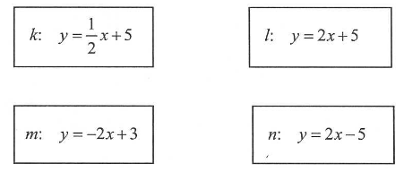

⠀
Jesteś tutaj:
Matura podstawowa - kurs - część 48 - zadania
Matura podstawowa - kurs - część 48 - zadania
Cały kurs na:
./matematyka-matura-podstawowa-kurs.html
.
Wybierz i zaznacz równanie opisujące prostą prostopadłą do prostej o równaniu \(y=\frac{1}{2}x+1\).
A.
\( y=-2x+1 \)
B.
\( y=0{,}5x-1 \)
C.
\( y=-\frac{1}{2}x+1 \)
D.
\( y=2x-1 \)
A
Prostą równoległą do prostej o równaniu
\(y=\frac{2}{3}x-\frac{4}{3}\)
jest prosta opisana równaniem
A.
\( y=-\frac{2}{3}x+\frac{4}{3} \)
B.
\( y=\frac{2}{3}x+\frac{4}{3} \)
C.
\( y=\frac{3}{2}x-\frac{4}{3} \)
D.
\( y=-\frac{3}{2}x-\frac{4}{3} \)
B
Proste o równaniach
\(-3y - mx + 12 = 0\)
oraz
\(y = 6x - 12\)
są prostopadłe dla \(m\) równego:
A.
\( \frac{1}{2} \)
B.
\( -18 \)
C.
\( -\frac{1}{2} \)
D.
\( 6 \)
A
Wykresy funkcji liniowych \( f(x)=\frac{\sqrt{5}}{3}x+6 \) oraz \( g(x)=\frac{5}{3\sqrt{5}}x-\frac{1}{6} \) :
A.
są prostopadłe
B.
przecinają się, ale nie są prostopadłe
C.
pokrywają się
D.
są równoległe, ale się nie pokrywają
D
Dane są równania czterech prostych:  Prostopadłe są proste:
A.
\(l\) i \( n \)
B.
\(l\) i \( m \)
C.
\(k\) i \( n \)
D.
\(k\) i \( m \)
D
Równania \( y=-\frac{3}{4}x+\frac{5}{4} \text{ oraz } y=-\frac{4}{3} \) opisują dwie proste
A.
przecinające się pod kątem o mierze \( 90 ^\circ \).
B.
pokrywające się.
C.
przecinające się pod kątem różnym od \( 90 ^\circ \).
D.
równoległe i różne.
C
Wskaż równanie prostej, która jest równoległa do prostej o równanie \(12x+4y+3=0\)
A.
\( y=12x \)
B.
\( y=-12x \)
C.
\( y=3x \)
D.
\( y=-3x \)
D
Wyznacz wszystkie parametry \(m\) dla których proste \(y=(m^2+1)x-3\) oraz \(y=-\frac{1}{3}x+2m\) są prostopadłe.
\(m=\sqrt{2}\) lub \(m=-\sqrt{2}\)
Prosta \(l\) o równaniu \(y=m^2x+3\) jest równoległa do prostej \(k\) o równaniu \(y=(4m-4)x-3\). Zatem:
A.
\( m=2 \)
B.
\( m=-2 \)
C.
\( m=-2-2\sqrt{2} \)
D.
\( m=2+2\sqrt{2} \)
A
Proste o równaniach: \(y=2mx-m^2-1\) oraz \(y=4m^2x+m^2+1\) są prostopadłe dla
A.
\( m=-\frac{1}{2} \)
B.
\( m=\frac{1}{2} \)
C.
\( m=1 \)
D.
\( m=2 \)
A